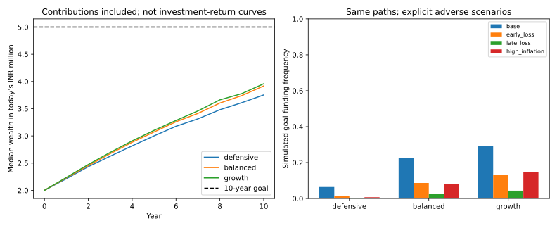

Wealth Planning & Portfolio Risk
A fictional household: objectives before allocation
Research by Anjaney Malhotra · engineering undergraduate · reproducible code, explicit assumptions and recorded results.
Goal funding and investment policy
INR20 lakh invested today plus INR2.4 lakh at each year end targets INR50 lakh in today’s purchasing power after 10 years. Under the assumed model, all three plans have a material funding gap.

Calculation
Real wealth = nominal wealth/(1+inflation)^years. Shortfall = max(real goal − real wealth, 0).
Portfolio downside and constraints
Optimisation can enforce allocation limits and measure tail risk. It cannot infer a client’s preferences or eliminate model error.

Calculation
CVaR measures the mean loss beyond a tail threshold under the specified scenario distribution.
Recorded goal-funding results
| Assumed policy | Funding frequency | Median real terminal wealth |
|---|---|---|
| defensive | 6.4% | INR37.53 lakh |
| balanced | 22.6% | INR39.18 lakh |
| growth | 29.1% | INR39.59 lakh |
2,000 synthetic shared paths; frequencies are conditional on assumed returns and inflation, not forecasts. Wealth includes contributions; the chart is not an investment-return series.
IPS, suitability gaps and client-facing explanation · Assumptions and stress results